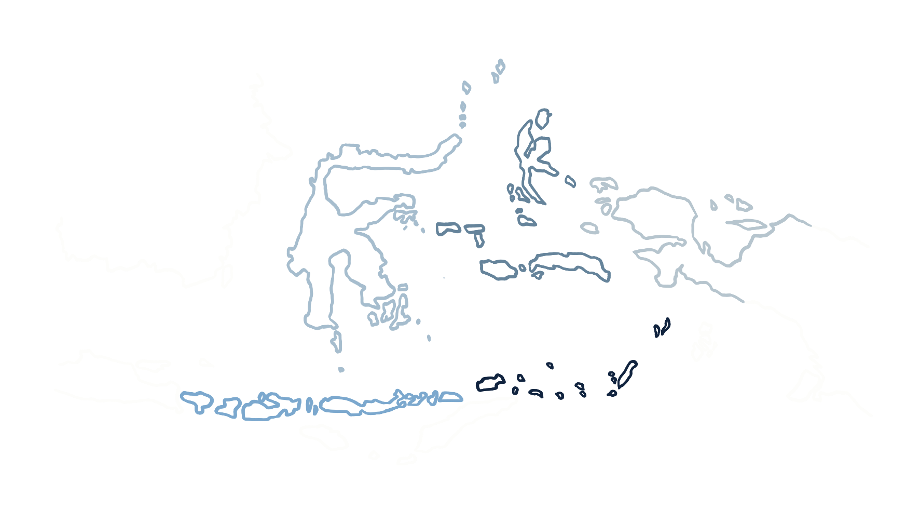

Indonesia, Your Way
32 itineraries. One extraordinary archipelago.

Indonesia is made of thousands of islands, countless reefs and waters that change from one region to the next.
From the volcanic islands of the Banda Sea to the reefs of Papua, the remote corners of the Moluccas and the
rich waters of Sulawesi, WAOW 2 takes you far beyond the usual routes.
Five regions. Thirty-two ways to explore them.
Five Regions. Countless Ways to Explore.
Banda Sea
Deep blue. Remote islands. Wild waters.
Volcanic islands, steep underwater walls and vast stretches of open ocean. The Banda Sea is made for those who want to go
further from the familiar.
Sunda Islands
Volcanic landscapes. Powerful currents.
Stretching east from Bali through Komodo and beyond, the
Sunda Islands combine dramatic landscapes above the water
with some of Indonesia's most dynamic diving below it.
Mantas, reef sharks, schooling fish and current-swept reefs
are part of the journey.
Papua
Where the reef comes alive.
From Raja Ampat to the remote waters of the Bird's Head
Peninsula and Triton Bay, Papua is home to some of the
richest marine ecosystems on Earth.
Mantas, sharks, pygmy seahorses, vast schools of fish and
coral reefs in extraordinary abundance.
Sulawesi
A world of contrasts.
From the volcanic landscapes of the north to the
extraordinary reefs of Wakatobi, Sulawesi offers remarkable
variety above and below the surface.
Macro life, coral gardens, pelagics and some of Indonesia's
most distinctive underwater environments.
Moluccas
Far from the usual routes.
The Moluccas are a world of remote islands, coral reefs and
quiet waters, with some of Indonesia's least-explored dive
sites.
A place to slow down, go further and discover what lies
beyond the familiar.